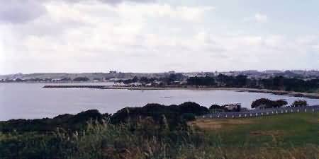
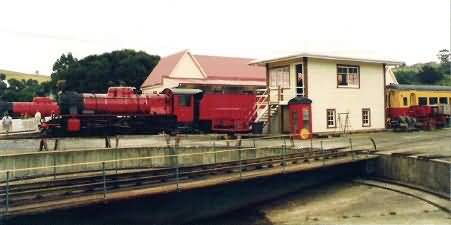
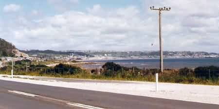
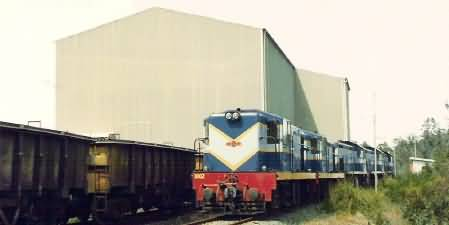
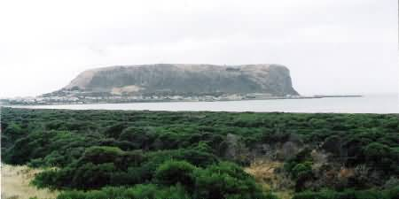
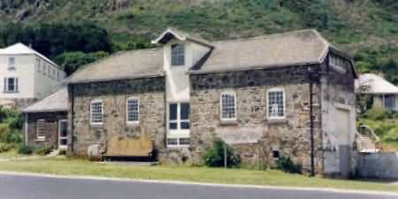
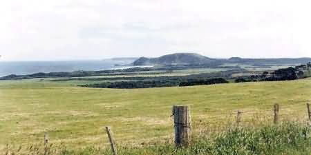
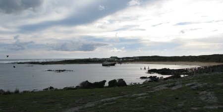

NAVIGATION
TOP of Page
MAIN Page
HOME Page
PREV Page
NEXT Page
NORTH WEST
Devonport to Burnie
Burnie to Stanley
Stanley to Waratah
TASMANIAN TOUR
North West
Central North
North East
East Coast
South East
South West
Central Highlands
West Coast
North Coast
|
From Devonport to Burnie along the North Coast

Devonport as seen from Mersey Bluff
Devonport, population 24,000, is situated on the Mersey river. Mersey Bluff,
on the western side of town contains aboriginal carvings plus the Tiagarra Arts and Crafts
Centre. Waverley, the ship depicted on the $5 note, was wrecked on Don Heads in 1880. Head
north for 110m. Continue straight onto The Esplanade for 400m. Turn left onto Murray Street.
Go straight through one roundabout for 290m. Turn right onto Tarleton Street (signs for
National Highway 1/Devonport/Hobart/Burnie/Launceston) for 1.0km. Slight right to stay on
Tarleton Street for 750m. Take the ramp onto Bass Highway/National Highway 1 for 3.7km.
Take the B19 exit towards Don/Devonport/Spreyton for 300m. Turn right onto the B19 Stony
Rise Road. Continue to follow B19 straight through one roundabout for 1.4km. The museum is
on the right, virtually underneath the Expressway bridge.
Don River Railway Museum (phone: 004-246-335), open from 09:00am to 16:00pm daily.
It is the largest rail museum in Tasmania and well worth the visit as it contains 3 foot 6 inch
gauge steam locomotives, diesels railcars, plus carriages and wagons. Railcars or Steam trains
are operated daily along the 4km museum track, Steam hauled trains operate over Australian
National lines between mid April to November, and Emu Bay Railway lines on historic occasions.

The Don River Railway Museum
TOP
MAIN
HOME
PREV
NEXT
Head east on the B19 Forth Road towards Richardson Drive and continue uphill for 600m. At the
roundabout, take the third exit onto the Bass Highway/National Highway 1 ramp for 110m. Keep
right at the fork, follow the signs for National Highway 1/Burnie and merge onto the Bass
Highway/National Highway 1 for 14.2km. Take the B15 exit towards Ulverstone/Sprent/Leven
Canyon for 400m. Turn left onto the B15 Castra Road and continue to follow the B15 for 1.4km.
Turn left onto Main Street/B15/C142 for 290m. Turn left onto Alexandra Road for 200m. At the
roundabout, take the third exit onto Reibey Street for 350m into Ulverstone.
Ulverstone, population 8,900, on the Leven river, is a farming area famed for its rich
brown volcanic soil. In the riverside park is a floodlit fountain which gives a 15 minute show.
Three 17 metre pillars in the main street are an armed forces memorial. Head West on Reibey St
towards King Edward Street at 240m. Turn left onto the B15/C142 Kings Parade at 100m. At the
roundabout take the second exit onto the C142 Kings Parade. Continue for 650m. Turn right onto
Queen Street at 1.3km. Continue onto Penguin Road for 7.1km. Continue onto the C240 Main Road
for 1.9km into Penguin.

Ulverstone as seen from the Bass Highway
Penguin, population 2,500, was developed during the Victorian gold rushes to supply house
wood. Fairy penguins live along the coast in rookeries, and come ashore at night. The old school
used to contain a model railway layout. Head Northwest on the C240 Main Rd towards Johnsons Beach
Road for 500m. Turn right onto Preservation Drive at 5.8 km. At the roundabout, take the third
exit onto the A2 Bass Highway/National Highway 1. Go through 1 roundabout at 10.6km. Turn right
onto Wilson Street at 450m. Turn right onto Cattley Street at 37m into Burnie.
TOP
MAIN
HOME
PREV
NEXT
From Burnie to Stanley along the North Coast
Burnie, population 20,400, on the Emu river, is a busy port exporting ore, wood, paper and
dairy products. You can tour both the APPM Paper Mill and the Lactos Dairy Factory
on the eastern side of town. Cheap accommodation can be had at the pub across the road from the
Australian National (AN) station. Railways started from here in 1878 with the Van Diemens Land
Company tramway to Rouses Camp near Waratah. The Emu Bay Railway (EBR) had a shunting
yard almost under the rail over-bridge in the centre of town. On 21/05/98 the company was sold to
Australian Transport Network's Tasrail operation. The Burnie workshops were closed, and the
unique collection of narrow gauge locomotives and rolling stock were sold off. It is now a cement
works, with no connection to the adjacent main line.

Emu Bay Railway train at the Hellyer Gorge Mine
I have travelled twice on the EBR, the first trip going the full length of the line to the ore
sheds at Primrose Junction, just north of Zeehan. The other trip was along the branch
line to the Hellyer Gorge Mine in the National Park. I thoroughly enjoyed these trips,
even taking my father on the second, with us sitting in the comfort of the last locomotive
while we enjoyed the incredible scenery. Head West on Cattley Street towards Wilson Street for
160m. Take the second right on to Mount Street for 160m. Take the first left on to Wilmot Street
at 350 m. Turn right onto Queen Street at 280m. Turn left onto the A2 Bass Highway/National
Highway 1. Continue to follow the A2 Bass Highway for 6.0km. Turn left onto Falmouth Street at
280m into Somerset.
TOP
MAIN
HOME
PREV
NEXT
Somerset, a fishing village, is at the start of the Murchison highway. Try the local
restaurants for a good feed of crayfish. Head North on Falmouth Street towards Simpson Street
for 280m. Take the second left turn on to the A2 Bass Highway for 8.5km. At the roundabout,
take the third exit onto the B26 Mount Hicks Road for 1.1km. Turn left onto the C240 Old Bass
Highway. Continue to follow the C240 road through two roundabouts for 2.0km into Wynyard.
Wynyard, population 4,400, on the Inglis river, is the centre of a dairying area for
the largest cheese factory in the state. Excellent views along the coast can be had from Table
Cape, the flat topped volcanic plug looking over Freestone Cove. Detour via the Golf Club for
a look at Fossil Bluff with its marsupial fossils. Head Southwest on C240 Goldie Street
towards Saunders Street and continue through one roundabout for 2.5km. Turn left onto York
Street for 210m. Turn right onto the A2 Bass Highway (signs for Stanley/Smithton) for 49.8km.
Turn right onto the B21 Stanley Highway for 6.9km into Stanley.
Boat Harbour, population 300, is a resort on a crescent shaped beach of clear water, fine
sand and tropical vegetation. Port Latta has the largest vessels to visit Tasmania loading
iron ore pellets from the 2.2km jetty. The ore is transported as a slurry in a pipeline from the
Savage River Mine. Wiltshire Junction is the western end of the Australian National
railway lines. Branch lines went to Stanley and Smithton.

Circular Head 'The Nut', with the township of Stanley
TOP
MAIN
HOME
PREV
NEXT
From Stanley to Marrawah, Corinna and Waratah down the West Coast
Stanley, population 700, is the oldest town in the north west and is dominated by
Circular Head ('The Nut'), a 135m high volcanic plug. The town contains many heritage
buildings, such as the Plough Inn (1836), the Edwardian Laughton House (1906) and Prime Minister
Joe Lyons cottage. Highfield (1826), built as the headquarters of the Van Diemens Land
Company, still stands on the shoreline. A fleet of 30 fishing boats supply fresh seafood to the
Co-op wharf, where crayfish can be bought. Head west on the B21 Stanley Highway towards Wilson
Street for 6.9km. Turn right onto the A2 Bass Highway for 12.1km. Turn left to stay on the A2
Bass Highway. Go through one roundabout and proceed for 48.2km via Smithton and Christmas Hills.
Turn right onto the C213 Comeback Road (signs for Marrawah) for 1.6km into Marrawah.

Highfield, Van Diemans Land Company headquarters
Smithton, population 3,300, on the Duck river, is rich farmland reclaimed from swamp.
Cape Grim is a via a 45km bus tour to see the workings of Woolnorth (1830), the historic
Van Diemens Land Company homestead. Its 250,000 acres contain an air monitoring station
measuring the purest air in the world. Christmas Hills has a great pub with restaurant
and open fire. It is well worth the stop just for its excellent trout meals and mixed grills.
Brittons Swamp has bones of animals from 37,000 years ago, including giant wombats and
kangaroos plus Nototherium, a bullock size marsupial. The remains are assembled in the Hobart
and Launceston museums.
TOP
MAIN
HOME
PREV
NEXT
Please Note: Dirt roads are to be found in this region. Down the West Coast from Marrawah
to Corinna is 142km (estimated time 4h:38m) and Corinna Northeast to Savage River is
24.6km (estimated time 1:00hrs). The roads are regularly graded and presented no problems
for the journeys done in a rental VW Beetle and my Toyota Corolla. Tourists rarely see this
region despite the extremely photogenic nature of the mountains, rivers and coastal scenery.
It is definitely worth the trip.
Marrawah overlooks a rocky coastline beaten by winds off the Southern Ocean. The area
has rich farming land, covered with wildflowers in the spring. Aboriginal carvings are found
on nearby Mt Cameron. The last Thylacine was shot near here in the 1930's. Be sure to
obtain food and petrol here for the 274km long trip to Savage River. Head Southwest on the
C213 Comeback Road towards Green Points Road for 1.6km. Continue onto the C214 Arthur River
Road for 14.8kM into Arthur River. Arthur River is a small holiday community set in a
pleasant heath. The beach near the bridge offers interesting photographic opportunities with
the rock formations. Head Southeast on the dirt C214 Temma Road for 21.9kM into Temma.

Scenery south of Arthur River on the rugged West Coast
TOP
MAIN
HOME
PREV
NEXT
Temma was the harbour for the horse drawn Balfour - Temma Tramway, used to transport
copper ore from the inland Balfour mine in the 1910's. The harbour is extremely small and now
protects two fishing trawlers with two homes on the shore. It is as far as you can travel
South on the West Coast on a road. A nearby plaque marks it as 'The End of the World', which
seems wholly appropriate. Head North on the C214 Temma Road towards Kaywood Road for 7.5km.
Turn right onto the C214 Heemskirk Road and head East for 15.7km. Turn right onto the C249
Western Explorer Road and head South for 9.3km into the Balfour area. Within 1km up the rugged
side road is an airport and the site of the old mining township. Continue Southeast on the
C249 Western Explorer Road for 64.9km. Turn right onto the C249 Corinna Road at 2.8km to enter
Corinna.

Temma Harbour with half the fleet in anchorage
Corinna, on the Pieman river, is the aboriginal name for Thylacine. The population was
2,500 during the 1878 gold rush, but is now merely a garage and camping ground. The Pieman
River is named after Thomas Kent, a Hobart pie maker. He was imprisoned on Sarah Island
for selling spoiled pies, and escaped to hide here in 1823. The river is now dammed by the
Hydro Electricity Commission (HEC). There is a daily four hour river cruise down the Pieman
Gorge on the Huon pine MV Arcadia II. Fishing is good, but be sure you have bait
and a fishing license.
Head Northeast on the C249 Corinna Road for 3.2km then onto the C249 Western Explorer Road.
The C249 Western Explorer Road turns slightly left and becomes the C249 Corinna Road. Continue
for 20.6km, onto the B23 Waratah Road at 800m into Savage River.
Savage River, population 1,200, is Tasmania's only iron ore mine, and is the beginning
of the 98km ore slurry pipeline to Port Latta. Head Northeast on the B23 Waratah Road towards
Leatherwood Avenue. Continue to follow the B23 Waratah Road for 36.9km. Turn left onto Smith
Street at 190m into Waratah.
TOP
MAIN
HOME
PREV
NEXT
|